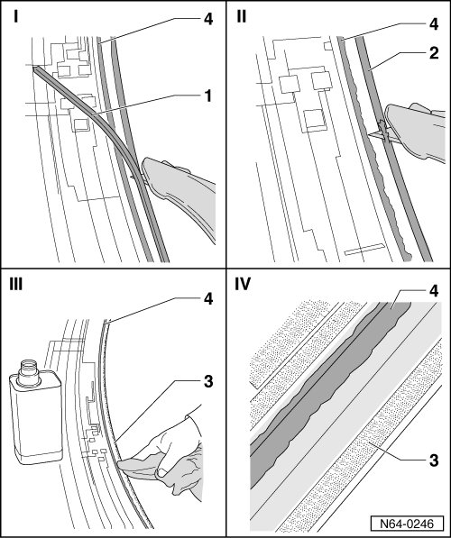
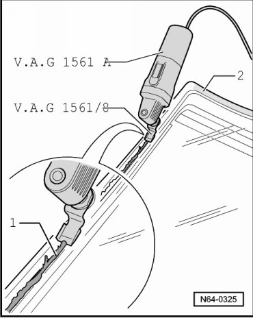
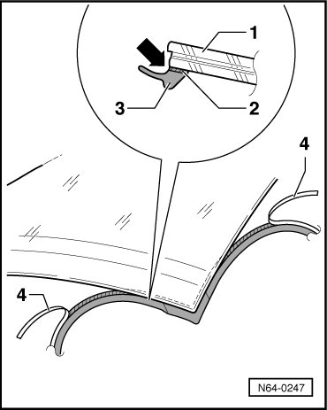
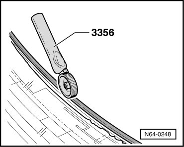

Removed Window, Preparing For Glazing
Flush Bonded Windows
Removed Window, Preparing for Glazing
• If the sealing lip is damaged during removal, the window can be installed again after a new service sealing lip cover molding (7L0 845 132) has been installed.
• Service sealing lip, installing
• Why was a Service sealing lip developed?
• The gap dimension between the window and the body flange have been reduced to 2 mm. Due to this, it is very difficult or not possible to insert the cutting thread under the sealing lip. As a consequence, the sealing lip will be damaged when the glass is cut out.
• If the glass is to be installed again, the damaged sealing lip must be removed.
• Complete removal of the old sealing lip and glass/paint primer down to the ceramic coating of the glass is a requisite for durable bonding of the service sealing lip.
• Therefore we would like to point out to you that the work step of removing the sealing lip and glass/ paint primer must be performed very exactly.
• Silicone remover (LSE 020 100 A3) is used for this task. However, silicone remover must not come in contact with the trimmed-down sealant bead.
• For this reason, the sealant bead must not be trimmed until the sealing lip has been removed and the silicone remover dried.
• The individual work steps are described below.
• The bead of window sealant may be trimmed only after the following work steps have been completed.

- Roughly cut sealing lip - 1 - off.
- Slice the remaining sealing material - 2 - as far down as possible.
- Soak the remaining sealing lip and trail of primer - 3 - using a cloth saturated with silicone remover (LSE 020 100 A3) and wipe off.
- After cleaning the surface, thoroughly wipe it with a dry cloth.
- Finish trimming down the sealant bead - 4 - to about 1 mm.
• When reusing a window, cut the remaining adhesive sealant back to 1 to 2 mm shortly before rebonding.
• The remaining material serves as a base for the new adhesive sealant being applied.
CAUTION!
Do not prime or use a cleaning solution on the adhesive surface. Keep the adhesive surface free of dirt and grease.
Do not yet treat the cut adhesive surface with the activator.
- When trimming sealant bead - 1 -, make sure that sealing lip - 2 - and ceramic layer are not damaged.

CAUTION!
Exception: If the bonding is going to be performed longer than one day after cutting back the adhesive bead, then then remaining material must be activated with the activator (D 181 801 A1).
Apply the activator evenly and in one wiping motion using the applicator (D 009 500 25).
Do not let the activator come in contact with the paint because this will damage the paint.
Air dry time approximately. 10 minutes
- Turn windshield over.

- Before gluing on service sealing lip, hold seal against windshield to check length.
- Pull about 20 cm of backing - 4 - off service sealing lip.
- Install service sealing lip - 3 - exactly to contour on edge of glass - arrow -.
- Make sure that adhesive strip on service sealing lip is flush with the edge of the windshield.
Always apply service sealing lip from corners of windshield to center. This will enable you to make corrections (seal too long) if necessary.
- Turn windshield over again. For a firm connection between windshield and service sealing lip, press down seal using pinch roller (3356).
